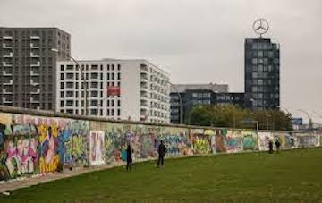
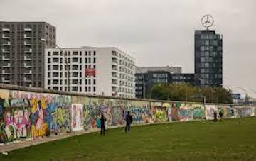

I visited Berlin while I was working in France. My friend and I went in late December, so my memories are marred by the most bitter cold I ever did experience. Still, I'm glad I went! It was definitely worth it, especially to see the Berlin Wall in its modern state. I really liked that pieces of it were dispersed throughout the city. It was actually pretty moving to look at and reflect on.
I felt similarly about the Holocaust Memorial, which was sobering to walk around in.
One thing I remember most about my trip to Berlin is currywurst - I ate so much I thought I was going to be sick. I regret nothing!

We ended up spending the New Year in Berlin, which was a little terrifying, given fireworks are legal. People were setting them off every few seconds and I kept ducking, thinking I was getting shot at. Oh well! At least there had been a giant fair near the Brandenburg Gate a few days prior, so it made up for it retroactively.